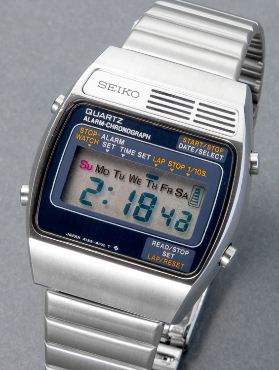
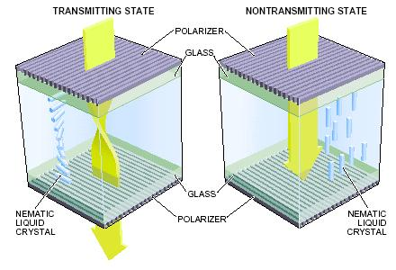

The Quantum Zeno Effect
Introduction and Historical Background
The Quantum Zeno Effect (QZE) was named after the ancient Greek philosopher Zeno of Elea, famous for his paradoxes about motion and change. The effect was first formally described by Alan Turing in 1954 but was named and thoroughly analyzed by George Sudarshan and Baidyanath Misra in 1977. The name refers to Zeno’s arrow paradox, which argues that a flying arrow must be motionless because at any given instant it occupies a space equal to its length - drawing a parallel with how quantum measurements can “freeze” the evolution of a quantum system.
The Quantum Zeno Effect describes how frequent measurements of a quantum system can inhibit its evolution. In essence, repeatedly measuring an unstable quantum system can prevent it from decaying or changing state. This phenomenon emerges from the fundamental principles of quantum measurement theory and highlights the profound role that observation plays in quantum mechanics.
Theoretical Framework
The mathematical description of the Quantum Zeno Effect begins with considering a quantum system initially in state \(\psi(0)\). The time evolution of this state is governed by the Schrödinger equation, which gives \(\psi(t)\) at a later time \(t\). To find the probability of the system remaining in its initial state, we compute the overlap integral between the initial and time-evolved states:
\[P(t) = \left|\int \psi^*(0,x)\psi(t,x)dx\right|^2\]
For small times, we can expand \(\psi(t)\) in a Taylor series around \(t=0\):
\[\psi(t,x) = \psi(0,x) + \left.\frac{\partial \psi}{\partial t}\right|_{t=0}t + \frac{1}{2}\left.\frac{\partial^2 \psi}{\partial t^2}\right|_{t=0}t^2 + ...\]
When substituted into the probability integral and evaluated to second order in \(t\), this yields:
\[P(t) \approx 1 - \frac{t^2}{τ^2}\]
where \(τ\) represents a characteristic time that depends on the system’s dynamics. When we consider performing \(N\) measurements in a total time \(T\), with measurements separated by intervals of \(T/N\), the survival probability takes the form:
\[P_N(T) = \left[1 - \frac{(T/N)^2}{τ^2}\right]^N\]
A crucial mathematical result emerges as we take the limit of continuous measurement: as \(N\) approaches infinity, \(P_N(T)\) approaches 1, effectively freezing the system in its initial state.
The Quantum Zeno Effect states that an unstable quantum system, if observed continuously, will never decay or change state. The act of measurement “freezes” the system into its initial state. This is analogous to Zeno’s arrow paradox, where an arrow in flight is considered motionless at each instant, and thus paradoxically cannot move. The effect demonstrates how quantum measurement fundamentally influences quantum systems, with frequent measurements preventing transitions between quantum states that would naturally occur without observation.
Adiabatic Evolution with Polarized Light
The following example, while often mistakenly attributed to the Quantum Zeno Effect, actually demonstrates quantum adiabatic evolution. Consider a sequence of polarizers that gradually rotate light’s polarization. While this involves measurements, it fundamentally differs from the Quantum Zeno Effect because it achieves state evolution rather than preventing it.
Consider a series of \(N\) polarizers arranged in sequence, each rotated by an angle \(\theta\) relative to the previous one. The probability of a photon passing through all polarizers is given by \(P=\left(|\cos (\theta)|^2\right)^{\mathrm{N}}=|\cos (\theta)|^{2 \mathrm{~N}}\). If we want to rotate the polarization by 90° (π/2 radians) using N polarizers, each polarizer must be offset by \(\theta=90°/N=\pi/(2N)\) from the previous one, giving a total probability of \(P=|\cos (\pi/(2N))|^{2N}\).
The mathematics reveals an interesting result:
\[ \begin{array}{ll} P=\left|\cos ^2\left(\frac{\pi}{2 N}\right)\right|^N & \\ =\left|1-\sin ^2\left(\frac{\pi}{2 N}\right)\right|^N & \\ \geq\left|1-\left(\frac{\pi}{2 N}\right)^2\right|^N & \left(-\sin ^2(x) \geq-x^2\right) \\ \geq 1-N\left(\frac{\pi}{2 N}\right)^2 & \left((1-x)^N \geq 1-N x\right) \\ =1-\frac{\pi^2}{4 N} \end{array} \]
This mathematical relationship demonstrates that as the number of polarizers increases and the angle between them decreases, the probability of photon transmission approaches 1. In practical terms, using 90 polarizers with 1° rotation between each allows over 97% of the light to pass through while achieving a complete 90° rotation of polarization. This demonstrates adiabatic evolution, where sufficiently slow and gradual changes allow the quantum state to evolve smoothly along a desired path. Unlike the Quantum Zeno Effect, which prevents state changes through repeated measurements in the same basis, this example shows how measurements in gradually changing bases can guide state evolution.
Adiabatic evolution in quantum mechanics describes a process where a system’s parameters are changed slowly enough that the system can adapt to the changes while maintaining its quantum state character. When changes occur gradually, the system remains in an instantaneous eigenstate of the time-dependent Hamiltonian. This is analogous to how a gradually twisted chain of polarizers can smoothly rotate light’s polarization with minimal loss, contrasting with the sudden state projection that occurs in the Quantum Zeno Effect. The adiabatic theorem states that if a system starts in an eigenstate and the Hamiltonian changes sufficiently slowly, the system will follow the changing eigenstate without transitioning to other states.
Experimental Results and Current Research
The first definitive experimental verification of the QZE was achieved by Itano and colleagues in 1990 Itano. Their groundbreaking experiment utilized trapped beryllium ions to demonstrate that frequent measurements could indeed inhibit the transition between two atomic levels. Since then, modern experimental investigations have expanded dramatically, demonstrating the effect in ultracold atoms, superconducting quantum circuits, nuclear magnetic resonance systems, and Bose-Einstein condensates.
Contemporary theoretical work has expanded our understanding beyond the basic Quantum Zeno Effect, including the discovery of the Anti-Zeno Effect, where frequent measurements can actually accelerate decay rather than inhibit it. The effect has found significant applications in quantum technology, particularly in quantum computation for error prevention and decoherence control. Current research focuses on understanding the boundaries between Zeno and Anti-Zeno behavior, the role of measurement strength, and potential applications in quantum control protocols.
The behavior of twisted nematic liquid crystal displays demonstrates adiabatic evolution similar to the polarizer example discussed above, rather than the Quantum Zeno Effect.
Each layer of the liquid crystal display contains a cholesteric phase with a specific pitch. The pitch is chosen such that the light is rotated by 90° when passing through the layer.


The adiabatic evolution described for the many polarizers above occurs here through the continuous rotation of the liquid crystal molecules. The twisted nematic liquid crystal structure gradually rotates the light’s polarization by 90°. The light is then blocked by the second crossed polarizer. When an electric field is applied, the liquid crystal molecules align parallel to the field and the light is not rotated anymore. The light can pass through the second polarizer and the pixel is switched on.
For a deeper understanding of the Quantum Zeno Effect, several comprehensive resources are available. Bouwmeester et al.’s “The Physics of Quantum Information” provides an excellent overview of the effect in the context of quantum information science. Wiseman and Milburn’s “Quantum Measurement and Control” offers a detailed theoretical treatment, while Haroche and Raimond’s “Exploring the Quantum” presents both theoretical and experimental perspectives.